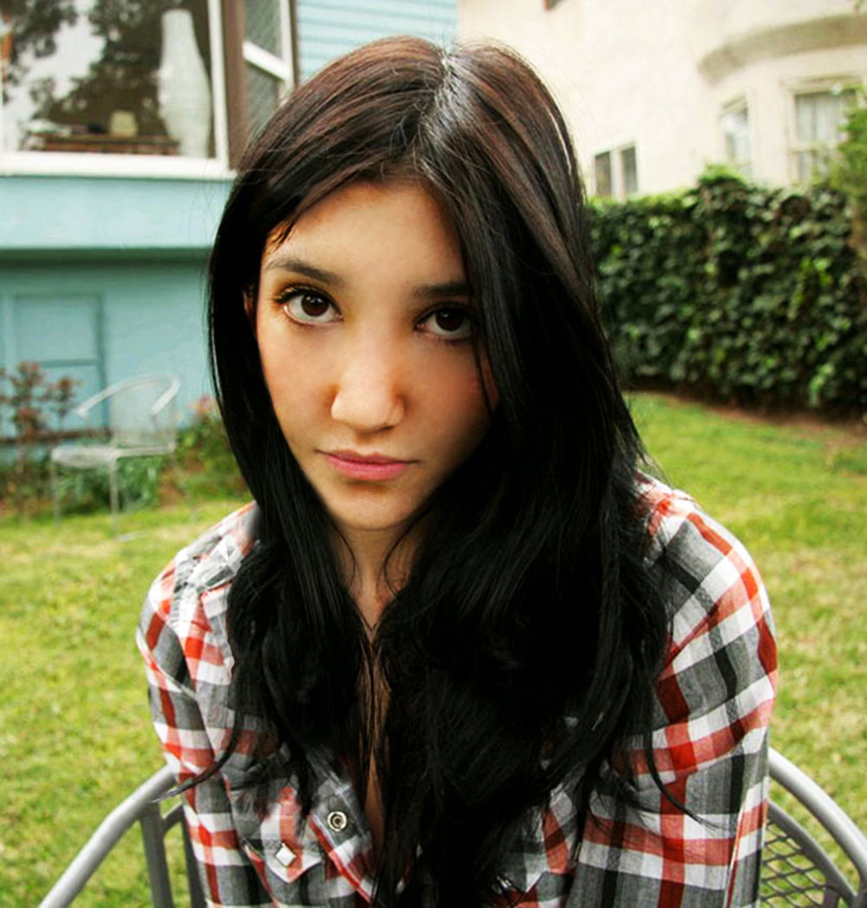
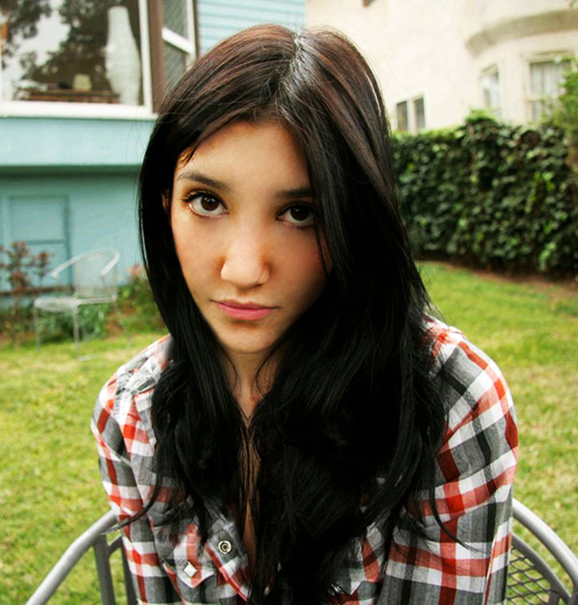
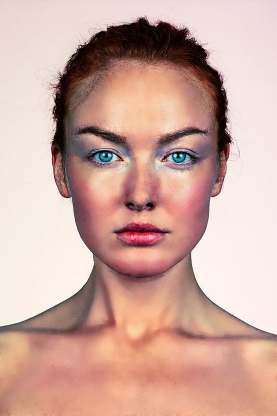
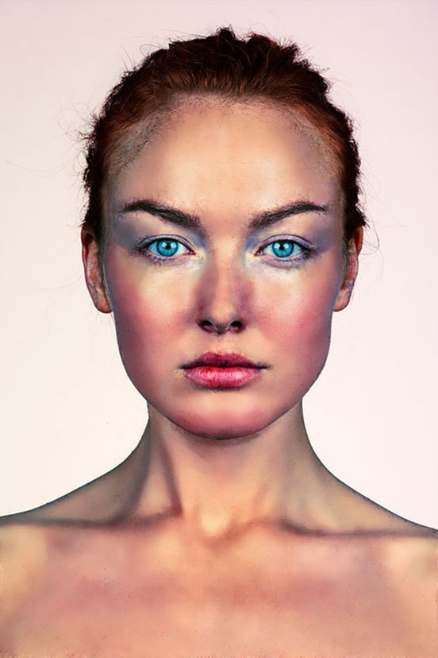
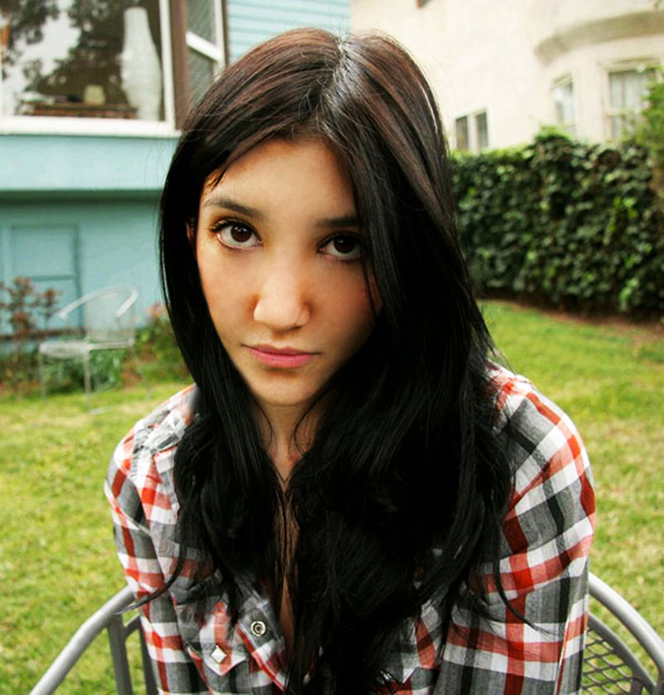
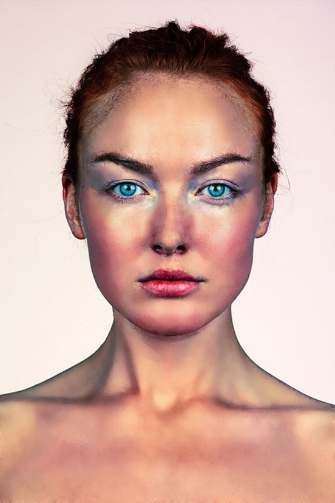
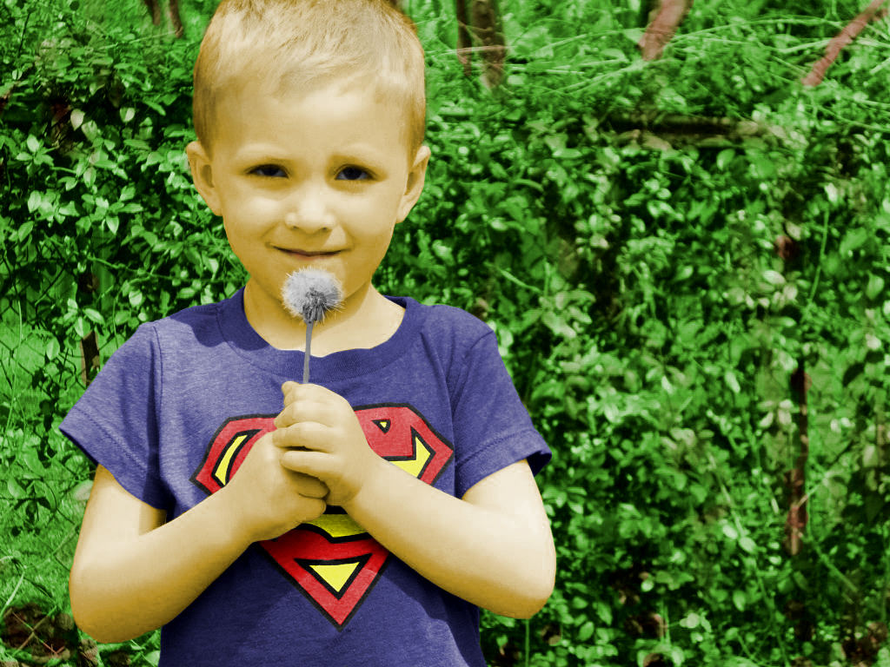
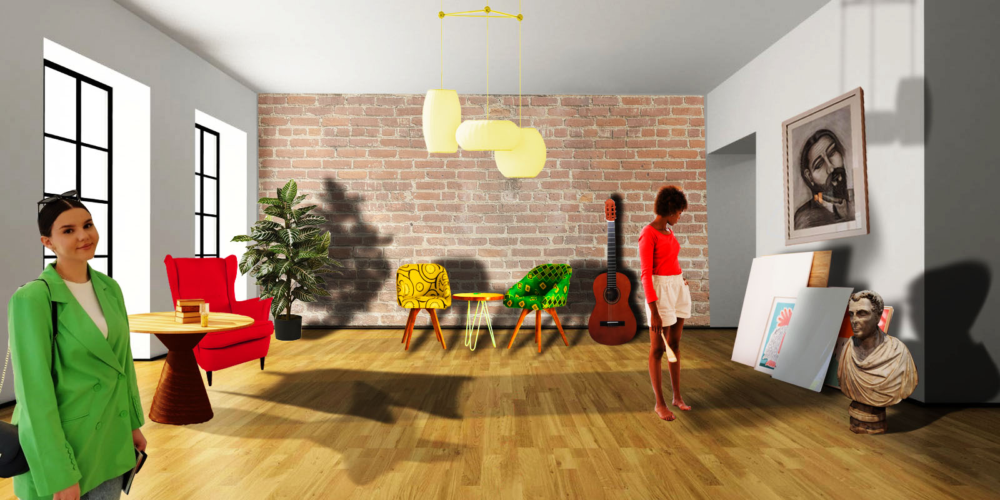
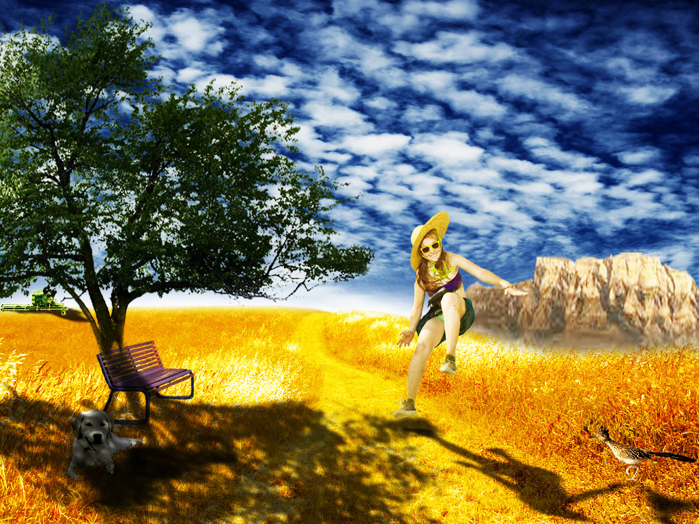

.jpg) 
Ovdje se nalaze moje vježbe i zadaci s kolegija Digitalni multimedij 1.
Prva vježba je rađena u programu FontForge. Cilj je bio napraviti font za slova vlastitog imena i prezimena te font za karakteristična slova hrvatskoga jezika.
Na ovom pdf dokumentu možete pogledati moj font.
Druga vježba je napravljena u Adobe Illustratoru, a zadatak je bio napisati inicijale svojim fontom, uz određene alate Illustratora kao što su crtanje krivulja i gradijenti.
Na ovom pdf dokumentu možete pogledati moj rad.
Treća vježba je također rađena u Adobe Illustratoru, ali s nešto zahtjevnijim alatima. Cilj je bio napraviti crtež u Illustratoru uz alate kao što su crtanje krivulje, transparencija, rotacija te bojanje elemenata uz Swatches alat.
Na ovom pdf dokumentu možete pogledati moj digitalni crtež pod nazivom London eye.
Četvrta vježba je također rađena u Adobe Illustratoru, ali s nešto zahtjevnijim alatima. Cilj je bio napraviti crtež u Illustratoru uz alate kao što su crtanje krivulje, transparencija, rotacija te bojanje elemenata uz Swatches alat.
Na ovom pdf dokumentu i ovom pdf dokumentu možete visjeti moje radove.
Nakon četvrte vježbe, uslijedio je projektni zadatak. Cilj je bio napraviti crtež u Illustratoru uz alate koje smo do sada naučili u prethodnim vježbama.
Na ovom pdf dokumentu možete pogledati moj projektni zadatak.
Kako je broj vježbi rastao tako s vježbe bile kompliciranije. Tako se u petoj vježbi selimo iz Adobe Illustratora u Adobe Photoshop. Peta vježbala je zahtjevala retuširanje i prepravke oštećenja na slici prikladnim alatima.
U prilogu pogledajte odradu moje vježbe i zadatka.


U šestoj vježbi smo nadogradili svoje znanje u Adobe Photoshopu te smo prošli kroz tehnike neinvazivnog koloriranja slike koje se može primijeniti na crno-bijele slike ili slike u boji kojima želimo promijeniti nijansu određenih područja. U prilogu možete pogledati moju vježbu i zadatak.

Nakon par vježbi u Adobe Photodhopu, na red je došao još jedan projektni zadatak gdje smo morali upotrijebiti stečeno znanje iz Photoshopa.
Pogledajte moju fotomontažu.

U sedmoj vježbi smo se napokon susreli s fotomontažom. Cilj ove vježbe je bio da u Adobe Photoshopu spojimo slike pomoću alata izrezivanja, kopiranja, te prilagodbe boje kako bi se slike što bolje uklopile.
U prilogu pogledajte moju fotomontažu.

Nakon fotomontaže, na red je došlo uređivanje videa. Osma vježba u Adobe Premieru bila je kinematografija. Naš zadatak bio napraviti GIF.
Pa pogledajte moje GIF-ove.


Deveta vježba je bila montaža videa u mp4 formatu. Ja sam svoju vježbu (prvi video) napravila u Shotcutu, a zadatak (drugi video) u Adobe Premieru.
Desetu i jedanaestu vježbu sam radila u Adobe Dreamweveru, a rezultat ove dvije vježbe ova moja web stranica.